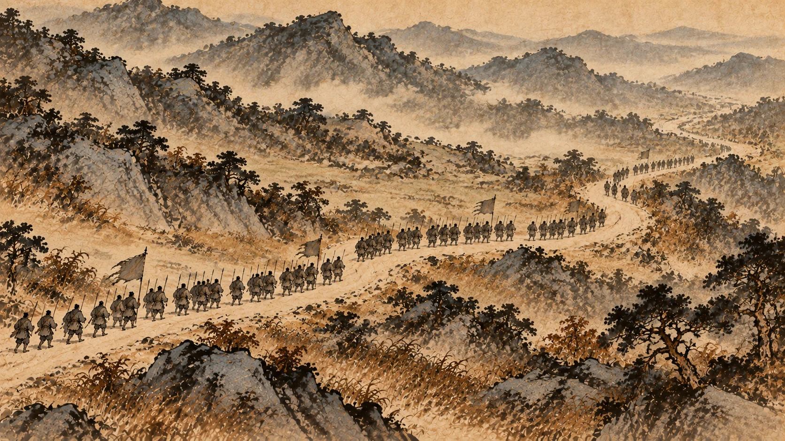
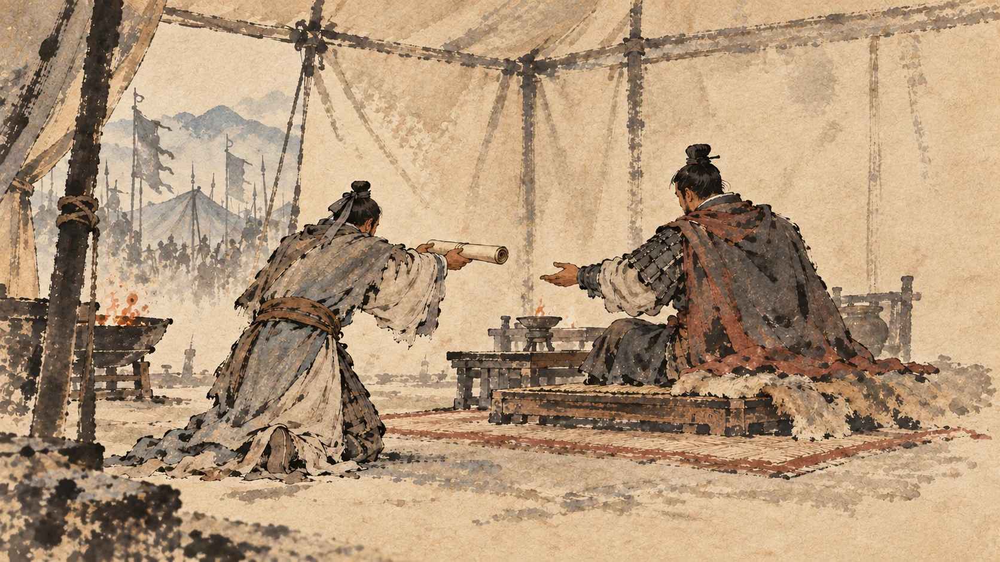
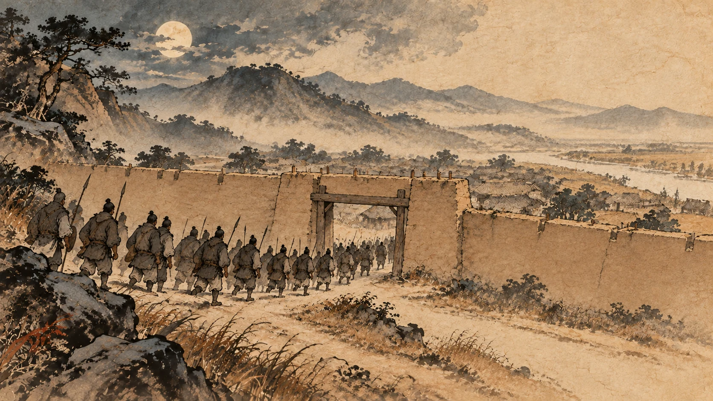
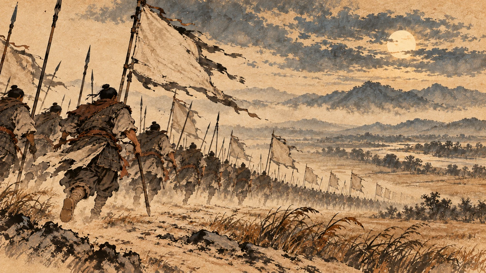
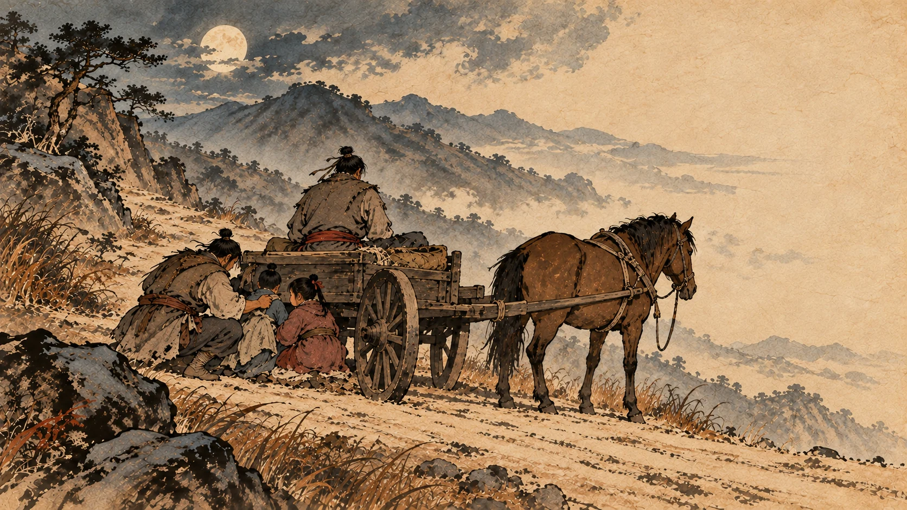
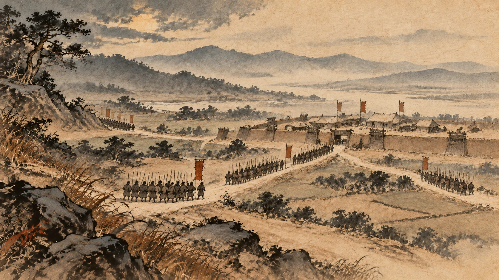
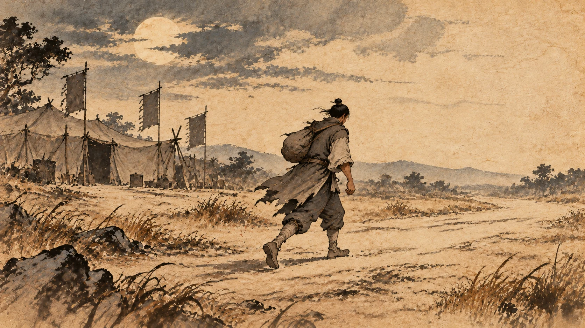

还定三秦与彭城之败
一、陈仓

汉元年八月，刘邦出兵了。
路线只有一个选择：从故道走。这是穿越秦岭、直通关中西部的一条老路。
目标是章邯。①
章邯的反应不算慢。他在陈仓迎击汉军。
结果《史记》写得很干脆：雍兵败，还走；止战好畤，又复败，走废丘。
章邯的兵败了，往后撤；在好畤停下再战，又败，退到废丘。②
刘邦进了关中，把章邯围在废丘，同时派将领去收陇西、北地、上郡。③
韩信的第一仗，用的就是他刚说过的那笔账。
第九章那场对话里，他说三秦的王在秦地没人爱。他说对了。章邯是当年带着秦地的子弟打了几年仗、又领着二十多万人投降、最后看着那二十多万人在新安被坑杀的三个人之一。他在秦地没有人心。
二、“传檄而定”应验了

三秦的崩盘速度，比任何人预料的都快。
汉二年，刘邦继续往东。塞王司马欣、翟王董翳、河南王申阳，全部投降。④
韩信在登坛那天说的那句话，生效了：今大王举而东，三秦可传檄而定也。
一封公文能定的事，真的就是几个月的事。
刘邦这一步走完，手上的家当完全变了：巴蜀、汉中、整个关中，连成一片。而这片地方在后面的四年里，会成为他输一百次也输不完的后方。
他开始搭架子：设陇西、北地、上郡、渭南、河上、中地等郡；把关外设成河南郡；立韩太尉信为韩王——这个韩信，跟大将军韩信不是同一个人，你看的时候别弄混。⑤
他还下了一条对当时人非常有吸引力的命令：诸将以万人若以一郡降者，封万户。
谁带一万人或者一个郡来投降，就封他万户。⑥
这是一条买人的价目表。在这之后的几年里，它比任何一场胜仗都管用。
三、他替义帝发丧
往东的路上，发生了一件很关键的事。
刘邦到了洛阳。新城的三老董公拦住他，跟他讲了义帝被项羽杀掉的事。⑦
刘邦的反应是：袒而大哭。
袒，是脱下上衣露出左臂，这是最重的哀礼。他大哭了一场。⑧
然后他做了三件事：为义帝发丧，停灵三天；派使者通告各路诸侯；发了一段话。
那段话是这么说的：
天下共立义帝，北面事之。今项羽放杀义帝于江南，大逆无道。寡人亲为发丧，诸侯皆缟素。悉发关内兵，收三河士，南浮江汉以下，愿从诸侯王击楚之杀义帝者。
天下共同拥立义帝，都向他称臣。现在项羽把义帝放逐、杀害在江南，大逆无道。我亲自为他发丧，诸侯都穿孝服。我要发动关内的兵，集合三河之地的士兵，沿江汉南下——愿意跟着诸侯王一起，去打楚国那个杀义帝的人。⑨
这一手是刘邦起兵以来最漂亮的一次政治动作。
第八章里，项羽封了十八个王，把义帝当成一道麻烦处理掉了。他做那件事的时候，没有一个人有反应——因为义帝是一面旗，旗倒了没有人在意。
而刘邦把这面旗重新竖起来，接到自己手上：我是替义帝讨伐叛逆的人。
从此他跟项羽打的仗，名义上不再是两个军阀抢天下，是替被杀的天子报仇。
四、打进彭城

汉二年春天，刘邦带着五路诸侯的兵，东进伐楚。
这一支军队有多少人？《史记》给了数字：凡五十六万人。⑩
（这个数字同样是史书的写法，跟项羽的“四十万”放在一起看，比例就清楚了：这一段里，刘邦的兵比项羽多得多。）
他打得很顺。项羽的主力在齐国——田荣反了，项羽正在北边平齐，一时收不了手。刘邦的队伍一路东进，直接进了彭城。
彭城是项羽的都城。
刘邦进了彭城之后做了什么？《史记》写得毫不客气：收其货宝美人，日置酒高会。
把项羽的财宝和美人收过来，天天摆酒请客。⑪
我读到这里，总想起第六章他在咸阳的表现：封府库、退军霸上、约法三章。一个连秦宫都不肯住的人，进了彭城就摆起酒来了。
这是刘邦一生中最得意的一段日子，也是最短的一段。
因为项羽回来了。
五、项羽回来了

项羽听说刘邦进了彭城，做了一件事。
《史记》写：项王闻之，即令诸将击齐，而自以精兵三万人南从鲁出胡陵。
项王听说了，就让手下的将领继续打齐国，自己带三万精兵，从鲁地南下，出胡陵。⑫
三万人。刘邦手上是五十六万。
接下来的战斗过程，只用了一天：
项王乃西从萧，晨击汉军而东，至彭城，日中，大破汉军。
项王从萧县往西，早晨开始打，一路往东推，到彭城的时候，是中午，已经把汉军打崩了。⑬
汉军往南跑，往山里跑，往河边跑。《史记》写了一句让后人读了两千年的话：汉卒十余万人皆入睢水，睢水为之不流。
十几万汉军士兵掉进睢水，水都不流了。⑭
刘邦被围了三圈。
然后《史记》写了这一仗最玄的一笔：于是大风从西北而起，折木发屋，扬沙石，窈冥昼晦，逢迎楚军。楚军大乱，坏散，而汉王乃得与数十骑遁去。
一阵大风从西北刮起来，折断了树、掀开了屋顶，扬起沙石，白天黑得像夜里；风正对着楚军刮。楚军大乱，散了，刘邦才带着几十个骑兵逃出来。⑮
这一场风不是我编的，是《史记》写进去的。你要按今天的标准去读，它是一次气象偶然；但你要知道当时的人会怎么读它。
六、那辆车上掉下来的两个孩子

刘邦往西逃的时候，想顺路去沛县把家眷接走。
太晚了。《史记》写：楚亦使人追之沛，取汉王家：家皆亡，不与汉王相见。
楚国也派人追到沛县去抓刘邦的家人。家里人散了，没能跟他见上。⑯
在路上，他遇到了自己的两个孩子——孝惠和鲁元。他把他们抱上车，一起走。
接下来的几句，我原样抄给你，一个字不改：
楚骑追汉王，汉王急，推堕孝惠、鲁元车下，滕公常下收载之。如是者三。曰：“虽急不可以驱，奈何弃之？”
楚国的骑兵追刘邦，刘邦急了，把孝惠和鲁元推下车；滕公（夏侯婴）每次都下车把他们收起来、装上车。这样的事发生了三次。夏侯婴说：就算再急，车也不能赶得再快了，怎么能把孩子扔了？⑰
《樊郦滕灌列传》里记的版本更狠：汉王怒，行欲斩婴者十余。
刘邦发怒，路上有十几次想要杀夏侯婴。⑱
这一段我讲不了道理。为什么这么做，《史记》一个字都没有解释；我也不替他补。我只把两条史料都摆在这里，你读的时候自己掂量。
但后果是可以确定的：他的父亲和妻子，从此在项羽手里，做了两年多的人质。⑲
七、退到荥阳

彭城大败之后，很多人的第一反应是站队。
《史记》说：汉王之败彭城，诸侯皆复与楚而背汉。
刘邦在彭城一败，诸侯们又都跟了楚国，背弃了汉国。⑳
刘邦往西退。他先到了下邑——吕后哥哥周吕侯在这里带兵；收了一些散兵，又往西，到了荥阳。
到荥阳的时候，《史记》写了一段很有分量的话：至荥阳，诸败军皆会，萧何亦发关中老弱未傅悉诣荥阳，复大振。
到了荥阳，各路败军都汇聚过来；萧何也从关中把关中那些“老弱未傅”——还没到服役年龄的、年纪大的——全部发来荥阳。于是声势又大振。㉑
这就是第八章那块地的好处。
刘邦被打得只剩几十个骑兵逃出来，可他有一个萧何守在关中。关中没丢，萧何就能一次一次把人送来。楚军打到荥阳，就再也过不去了：楚以故不能过荥阳而西。㉒
八、下邑那一次下马

在下邑，刘邦问了张良一个问题，这个问题后来被看作整场楚汉战争的总纲。
《史记》写了当时的场面：汉王下马踞鞍而问曰。
下马，坐在马鞍上，问。
他问的是：
吾欲捐关以东等弃之，谁可与共功者？
我想把关中以东的地方全都丢出去，谁能跟我一起建功？
张良的回答是三个名字：
九江王黥布，楚枭将，与项王有隙；彭越与齐王田荣反梁地：此两人可急使。而汉王之将独韩信可属大事，当一面。即欲捐之，捐之此三人，则楚可破也。
九江王黥布是楚国的猛将，跟项王有嫌隙；彭越在梁地跟齐王田荣一起反楚。这两个人可以赶紧用起来。至于大王手下的将领，只有韩信能把大事托给他，能独当一面。您要是真想把地方丢出去，就丢给这三个人——那楚国就能破。
于是刘邦派随何去说九江王黥布，又派人去联络彭越。㉓
这段话是全书的总部署。后面十几章讲的每一场仗，几乎都在这条线上：黥布在西边牵制，彭越在东边断粮，韩信在北边占地。
而张良那句“捐之此三人”，说的是拿地换人。第八章里项羽分天下，是按自己的功劳和好恶分的；刘邦这里分的是未来的地盘，换的是眼前的三个人。两个人的区别，从这时候起就很清楚了。
顺带说一句张良这个人的定位。《史记》写得明白：张良多病，未尝特将也，常为画策，时时从汉王。
张良身体一直不好，从来没有单独带过兵，他的位置就是出主意，一直跟在刘邦身边。㉔
在那个年代，一个不领兵的人能在历史里留下这么重的分量，是很罕见的。
九、彭越是谁
下面说说那个在梁地反楚的人。你必须认识他，因为他后来干的事，比很多人以为的重要得多。
《史记》开头几句：彭越者，昌邑人也，字仲。常渔钜野泽中，为群盗。
彭越是昌邑人，字仲。常年在钜野泽里打鱼，做盗贼。㉕
陈胜、项梁起兵的时候，有人来找他，说：各路豪杰都起来反秦了，你也可以来，跟大家一起干。
彭越的回答是七个字：两龙方斗，且待之。
两条龙正在打，先等等。㉖
他等了一年多。等到泽里的年轻人凑了一百多个，来找他当首领。
彭越推辞了一番，最后答应了。但他提出了一个条件：与期旦日日出会，后期者斩。
约好明天日出时集合，晚到的斩。
第二天日出的时候，有十几个人晚了；最晚的到中午才来。
彭越说：我年纪大了，诸位硬要我做首领。现在约好的时间，晚到的这么多，不能都杀——就杀最后一个。
他下令让校长把那个人斩了。
那些人还笑着说：何至是？请后不敢。至于吗？以后不敢了。
彭越没理，拉出一个人，斩了，设坛祭祀，然后号令部属。
《史记》写在场人的反应只有十一个字：徒属皆大惊，畏越，莫敢仰视。
部属全都大惊，怕他，没有一个人敢抬头看他。㉗
一个在湖里打鱼做盗的人，用一颗人头教会了一百多个人，什么叫军纪。
后来他带着三万多人在外黄归附刘邦，刘邦拜他为魏相国，让他自己去打梁地。
再往后几年，这个人会在项羽的背后反复出现——项羽往西打，彭越就打他的粮道；项羽回身来打，彭越就跑了。楚汉相争四年，项羽始终没睡过一个安稳觉，很大一部分原因，就是梁地这个打鱼的。
跟项羽在战场上正面硬拼的，是刘邦；让项羽永远回不了家的，是彭越。
刘邦退到荥阳，靠着一条甬道运敖仓的粮。项羽追上来之后，第一件事就是去切那条甬道。
而刘邦在这一年，开始用另一样东西打这场仗。
金子。
下一章：荥阳相持——熬。